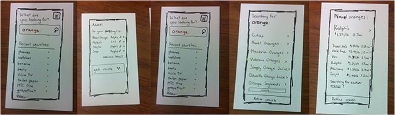
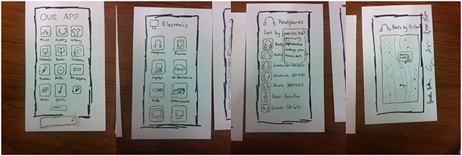

Heuristic Evaluation


Visibility of System Status
P1
- No indication of how the results are sorted( even though one can tell from the list that it is sorted by distance as a default method). [3]
- When clicking the “get route” button, users are really confused what kinds of routes would be shown on the next screen (route that pass all the shopping spots or the one can be selected). [3]
- System does not always provide user with enough information about the current task being performed (since it is procedure-based ). Should have a breadcrumb path indicating which step the user is on. [3]
- I like the “Added!” shown on the top of the next screen(shopping cart) , providing direct feedback to the user.
P2
- What am I supposed to do next: the second prototype provides a list of product categories as well as a search bar at the bottom. However, the user will be very confused to either search by name of the product or the category. [2]
- Where can I go next: when clicking on each of the sorted option, I have no idea what it will lead me to. I expected it would be a shopping list with my recent added item. However, it is a map with the location (which was very confusing). [3]
- There is no way to check the specs of each item(which is a must before buying behavior ). [2]
Both prototypes have serious visibility problems since system does not always provide user with enough information about the task being performed.
Match Between System and the Real World
P1
- It is not clear what “refine search” below the search results does: does it refine search by sorting or providing subcategories or etc. ? [2]
- I would simply put “shopping cart” instead of “in your shopping list”. [1]
P2
- The second prototype does not have much of a “real-world convention” problem since there only a few words displayed on screen(mostly the category names). However, I think the 2nd prototype is easier to read(by icons) than the first prototype(by words).
User Control and Freedom
P1
- Undo commands basically unsupported. [3]
- There is no way to check shopping list while searching for other products. I think they can add a shopping cart icon on top of the screen, similar to the one on the home screen. [1]
P2
- The second prototype does not support "go back” and “forward”. Users can only proceed by selecting each category. [3]
- There is no way to start a new search either in the searching process or after the final result is shown. [3]
The first prototype did a better job in going back to the previous searching stage or start a new search by adding “add more items?” button below the shopping list.
Consistency and Standards
P1
- The two similar looking “refine search” buttons on two executive pages leads to different drop down menus, which is very confusing. Should be more intuitive with naming. [3]
P2
- There are two unlabeled category buttons at the bottom of the secondary page (obviously it is due to lack of space but it still can be confusing of what they refer to). [2]
Error Prevention
P1
- Currently there is no specific methods targeting on error / error prevention in this prototype. The sub-category filter can be deemed as a way to prevent errors. [1]
- There is no instructions or tips provided when the user is doing the first pass of searching, which would probably lead to “results not found". I suggest adding search tips when doing the first pass of searching. [2]
P2
- No error message. However, users can select a location among all the possible locations on the map(color-coded based on system evaluation of the location), which is more intuitive than the first prototype(listing all possible locations and ). In this case, error may be prevented since option ranking are provided. [1]
Recognition rather than Recall
P1
- The “refine search” buttons on two executive screens should be named differently(since the refine search actually leads to a drop-down list of subcategories), otherwise users have to memorize the function of each. [2]
- No product name labeled on the map. Users have to memorize product name and associate them with locations to buy. [3]
P2
- Essential buttons do not have tooltips(explanations while presenting the prototype). [2]
- There is no way to retrieve the help/instructions during the whole searching process. [2]
The second prototype did a better job by marking various locations for each product on the map, which is more intuitive and requiring less memory.
Flexibility and Efficiency of Use
P1
- The 1st prototype allows saving searches and adding parameters to the shopping cart, which gives dimensions to the information flow(good job! but needs more thoughts on designing based on high-frequency commands).
P2
- The searching procedures are designed the same for both novice and expert users. They both have to go through selecting various categories and finally get directions from the map. I expect more levels and layers of operations. [1]
The first prototype demonstrate flexibility based on user behaviors while the second one is based on linear task flow.
Aesthetic and Minimalist Design
P1
- Waste of space on less important features: the "recent searches” section on the home screen takes major portion of the page(even for demonstration purpose), which would be better to be short and aesthetically less emphasized. [1]
- Repetitive functions: the “searching for another orange” button shown below the search result is actually the same as “go back”. [1]
P2
- Clean interface with sparse information. There needs to be a way that provide more information without losing its simplicity in form. [2]
Help Users Recognize, Diagnose, and Recover from Errors
P1
- Error messages unsupported in the 1st prototype. I think it can have an auto-correct/suggest feature that appears at the search bar. And only “correct” searches are saved in the database for future references. [1]
- What if the “ Ralph’s" shown for different items are not referring to the same Ralph’s? I think there needs to be a way that helps the user recognize which store it refers to (by labeling either “nearest” “street name”..etc.). [2]
P2
- No such implementation. The map is relatively small on the map and easy to click on the wrong area on the map. I think there needs to be a more refined map where only relative spots are shown and properly enlarged. [1]
Help and Documentation
P1
- There’s no help/ instructions features on how the app flows for both of the prototypes( which definitely should be added later on!). [2]
- The help function for the 1st prototype can have a sequential index and also shown as a question mark logo on the home screen in line with the shopping cart logo. [1]
Other issues:
- Users cannot view any other information about particular products except its name and location. [2]
- The first prototype is mainly helping users to get locations. However, the users have to select store(often different stores) every time they pick up an item, which is unrealistic. [3]
Comparative
The first prototype is based on searching while the second is based on selecting from existed categories. However, the second category also has an incomplete searching function, which is confusing to me. In addition, the first has a shopping cart function which I suppose is intended to plan multiple destinations routes; while the second leads users directly to the map(single destination).
Even though the first prototype demonstrates more user flexibility than the second one, it needs more consideration and elaboration. For instance, the “refine search” button definitely generates usability issues that fall in various heuristics.
Aggregate Evaluation
The core functionality of this app is to improve users’ shopping experiences. The first app is oriented around finding different stores where users are able to purchase the desired goods for the lowest prices. However, this app would at times alternatively provide too much information and too little information. Since there is no limit to the number of stores that the app can send the user to, the results given by the app has the potential to lead the user to an unreasonable amount of stores, which would use up a lot of more of the user’s time than it would save. Users are also required to choose a store every time they add an item to their “shopping list,” which is unrealistic when actually shopping. When purchasing groceries, users will typically only make their purchases at one location. Too much focus is given to the variety of stores the user is able to go to, rather than making the experience simpler for users. There is no information regarding particular items. For example, there are no product ratings given for any of the listed items. This may be reasonable when shopping for groceries, but since the app also allows the user to shop for electronics, furniture, sports gear, among other products, it is necessary to provide more of this type of helpful information for the user. The second app was an improvement over the first, mainly because it has a set of preselected categories presented in a grid interface, which is simpler than a general search tool that allows the user to shop for any product. However, this prototype also had the problem of providing too little useful information for the user to make an informed purchase decision. No user ratings were presented and the focus was only on helping the user save on price. Even the navigation portion of the app provided unclear visual cues.
We suggest adding a personal planner to the app. The user can make changes to the stores and item list at any stages. They can also preset their shopping preferences and shopping schedule. In this case, users have more freedom in their planning. The app can be their planner as well as guide. Users can either to start by searching items or stores, and create a shopping experience based on searching. The app can be their planner as a well as guide. We also think it is essential to add pictures and relevant information to each item, and since it requires a lot of information, we suggest limiting the item variety.
{kind=link}
{kind=link}